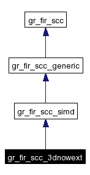
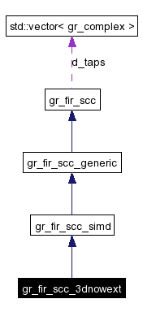

Main Page
|
Modules
|
Namespace List
|
Class Hierarchy
|
Compound List
|
File List
|
Compound Members
|
File Members
gr_fir_scc_3dnowext Class Reference
#include <
gr_fir_scc_x86.h
>
Inheritance diagram for gr_fir_scc_3dnowext:

[
legend
]
Collaboration diagram for gr_fir_scc_3dnowext:

[
legend
]
List of all members.
Detailed Description
3DNow! Ext version of
gr_fir_scc
Public Member Functions
gr_fir_scc_3dnowext
()
gr_fir_scc_3dnowext
(const
std::vector
<
gr_complex
> &taps)
Constructor & Destructor Documentation
gr_fir_scc_3dnowext::gr_fir_scc_3dnowext
(
)
gr_fir_scc_3dnowext::gr_fir_scc_3dnowext
(
const
std::vector
<
gr_complex
> &
taps
)
The documentation for this class was generated from the following files:
gr_fir_scc_x86.h
gr_fir_scc_x86.cc
Generated on Wed Jul 21 09:36:49 2004 for GNU Radio 2.x by
1.3.3
 1.3.3
1.3.3